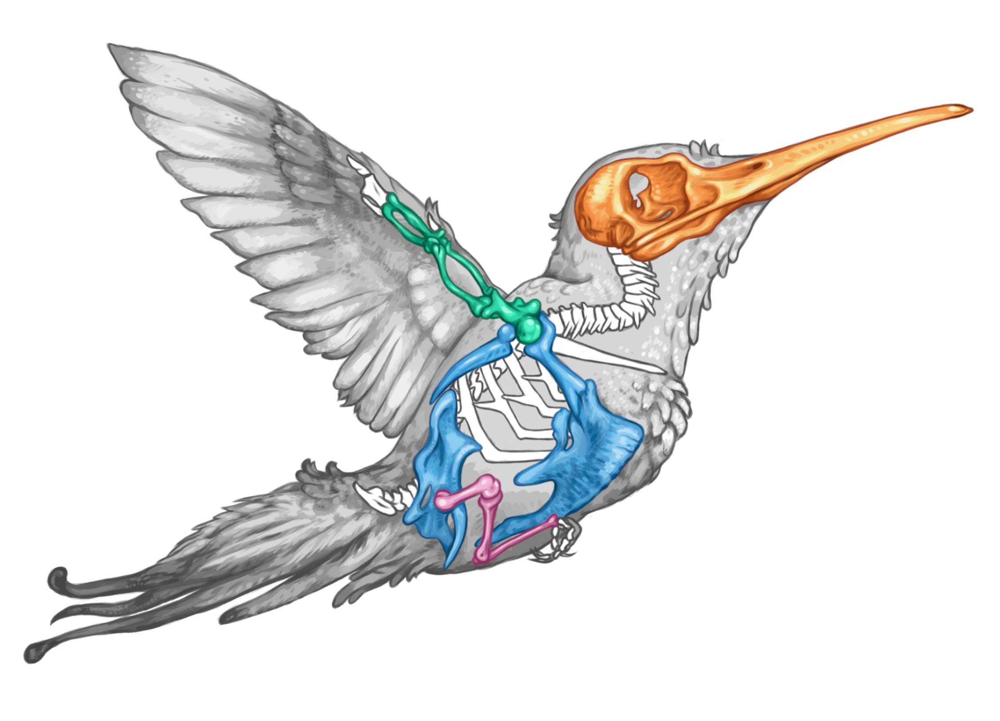
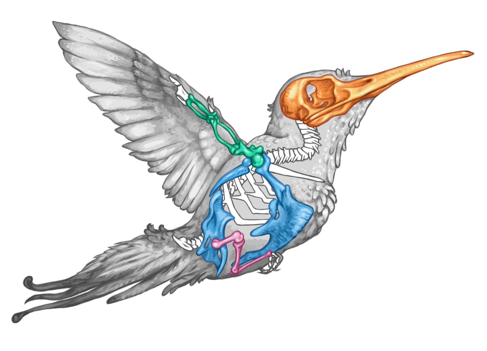

Home
This is the personal website of Dr. Andrew Orkney, evolutionary biologist, visual artist and animal aficionado.
My research portfolio is available at: my ORCiD page and my my Google Scholar Profile
Initial java script and cascading style sheets were sourced from: https://github.com/cplmakerlab
About
I'm Andrew Orkney, a postdoctoral researcher in the Hedrick Lab at Cornell University, College of Veterinary Medicine, Department of Biomedical Sciences. I am seeking faculty positions which present an opportunity to explore tantalising questions in evolutionary biology, mentor and lecture students. Accessible summaries of my ongoing research questions are presented in my 'Projects' tab, and I will provide research and teaching statements upon request.
I have a deep-seated fascination with animal life, especially patterns of evolutionary change playing-out over geological timescales, and how they have come to structure and define biodiversity and animal adaptation in the modern World. I love animal skeletons in particular, and use sophisticated high-resolution CT-scanning and digital reconstruction techniques to build datasets representing the diversity of animal shapes to engage my research questions. The analysis of these quantitative data require sophisticated mathematical and coding implementations, which provides an excellent opportunity to involve students in engaging state-of-the-art research while also teaching them valuable transferable skills in maths and computing that will benefit them in a wide variety of future career paths. Beyond data collection and analysis, I am committed to closely mentoring students to develop their public presentation skills and confidence. I view this as one of the most enjoyable aspects of my work and a major avenue to improve participation and joy among historically under-represented groups of people in science.
Outside of work I am a trained artist. I paint animals, participate in and help to set up exhibitions. See my 'Art' tab for examples of artwork which are included in my published and upcoming manuscripts. As a new faculty hire I will therefore bring not only excellence in research and a commitment to teaching that includes student participation in publications, but also a capacity to contribute to University cultural activities, especially those which encourage public engagement with the biological sciences.
Art

 

The Big Question
All of my research projects represent different perspectives approaching the same big question: How do the inherent limitations animals have inherited constrain their evolution and how exactly do they solve complex problems as their bodies evolve to meet new challenges?
Bird flight
I have been investigating the evolution of bird skeletal proportions, especially wing bones, since my undergraduate degree. Birds are a fascinating group of animals, whose evolutionary acquisition of flight and astounding diversification thereafter (11,000 species!) is believed to have been permitted by the divergent evolution of their wing and legs. This 'modular' format of evolutionary changes, dividing different tasks between different body regions that can evolve independently of one another, required birds to overcome fundamental developmental constraints that tend to force fore- and hindlimb skeletal proportions to evolve in unison. Traditionally, it is accepted that the evolution of bipedal locomotion in birds' dinosaur ancestors was the first step towards permitting their fore- and hindlimbs to evolve towards distinct functions.

Modular evolution: Evolutionary changes in skeletal proportions between different bird species have a highly organised manifestation, characterises by head, wing, body and leg 'modules' that tend to evolve independently. A Orkney Nat.Eco.Evo 2021.
My research, using high-resolution CT-scans of hundreds of bird species' skeletons, has presented clear evidence of divergent wing and leg evolution across birds, affirming some predictions of this paradigm. However, I have also shown that divergent wing and leg evolution is only indirectly related to ecological adaptation. Furthermore, ongoing research seriously brings into question the idea that divergent wing and leg evolution is ancestral to birds- raising major questions about the evolutionary context of the origin of flight, but perhaps better fitting enigmatic discoveries of four-winged and membranous-winged dinosaur groups in the last 2 decades.
I want creative students to help me further this research. Students will learn how to quantitatively measure complex aspects of bird and dinosaur anatomy, describe species-specific ecologies and analyse multivariate datasets in the context of evolutionary family trees.
Bat flight
It is widely believed that, like birds, bat wing proportions evolve independently of their legs. Exciting new research, involving a dataset of 111 detailed bat skeleton measurements, is under review! Bats evolved flight independently of birds, and therefore, if their skeleton evolves in a highly similar way, we may perhaps discover insights into a fundamental 'set of rules' for animal flight. If bats do things differently, then what a surprise that would be!
Sexual dimorphism; is chromosomal rearrangement a gas-pedal for evolutionary innovation?
Female bats give birth to young that may weigh as much as a third of their body mass, meaning that the female and male bat pelvis bones experience very different selective forces and may have distinct optimal shapes (sexually antagonistic selection). Indeed, the bat pelvis bone is an incredibly sexually dimorphic structure. The relocation of coding genes that control the development of sexually dimorphic traits on to the sex chromosomes is one potential means by which sexually antagonistic selection can be accommodated by evolving animals. Ongoing work is exploring the evolution of 3D pelvis shapes across bats, novel sex-determining chromosomal systems and the resolution or persistence of sexual antagonism. Together, these insights proffer a deeper insight into sexual dimorphism- the chasmic dichotomy at the heart of what it means to be a sexually reproducing animal.Surprisingly, while bats exhibit extreme sexual dimorphism in their pelvis shapes, there is scarce evidence that bird pelvis (known in birds as the 'synsacrum') shapes differ between males and females- even though the female pelvis must accommodate egg-laying and therefore has a different suite of functional challenges to the male pelvis. Perhaps, though, the extreme task of laying eggs in teeny-tiny hummingbirds, which can weigh as little as 2 grams, will prove an exception! The female hummingbird (the hummer-mamma) may even lay an egg that weighs more than her entire skeleton. Surely then, the hummer-mamma and hummer-papa will possess different pelvic shapes...and if they do not, then surely this indicates some amazingly restrictive and strong limiting obstacle in bird evolution.
Hummingbird happenings
I recently demonstrated that the strength of correlated evolutionary changes between bird wing bone proportions is much more intense in heavy birds than tiny species. This might happen because the high stresses of carrying a heavy body requires bones to work together to resist strain, forcing them to evolve in unison. This may mean that small bird species, which are not encumbered by this restriction, can explore novel wing proportions and designs more freely as they evolve- potentially explaining why small bodied bird species that are relatively closely related can exhibit a surprising diversity of flight styles. For example, swifts, nightjars and hummingbirds (all members of 'Strisores' or the 'Nightbirds') may soar, bat to and fro erratically, or undertake spectacular hovers.

Mass matters: as body mass increases (x-axis) the degree of independent evolution (y-axis) between wing bones (humerus and carpometacarpus) gets smaller and smaller. This may be caused by increasingly restrictive mechanical demands upon the skeleton. A.Orkney Nat.Comm. 2024
I am seeking funding to go further and specifically explore whether wing bone evolution differs between teeny tiny and super-massive hummingbird species, which differ in mass by a factor of 100! Prospective students will help design and place landmarks on high-resolution CT-scans of hummingbird skeletons to quantify the evolution of their wing bone proportions. I am also cultivating interest in sexual dimorphism in the hummingbird pelvis; see the 'Sexual dimorphism' project!
Animal asymmetry
Under constructions
Contact
For academic correspondance or employment questions please contact me at aco58@cornell.edu